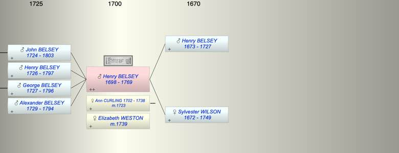

| [Index] |
| Henry BELSEY (1698 - 1769) |
|  |


|
| b. 1698 |
| m. (1) 25 May 1723 Ann CURLING (1702 - 1738) at Lydden |
| m. (2) 28 Jan 1739 Elizabeth WESTON at Lydden |
| d. 1769 at Lydden aged 71 |
| Parents: |
| Henry BELSEY (1673 - 1727) |
| Sylvester Emelin WILSON (1672 - 1749) |
| Siblings (3): |
| Emelin BELSEY (1693 - ) |
| Ann BELSEY (1702 - ) |
| Mary BELSEY (1702 - ) |
| Children (4): |
| John BELSEY (1724 - 1803) |
| Henry BELSEY (1726 - 1797) |
| George BELSEY (1727 - 1796) |
| Alexander BELSEY (1729 - 1794) |
| Grandchildren (7): |
| Isaac BELSEY (1755 - ), Elizabeth BELSEY (1757 - ), John BELSEY (1762 - ), Ann BELSEY (1765 - ), Mercy BELSEY (1768 - ), Henry BELSEY (1770 - ), Jane BELSEY (1758 - ) |
| Events in Henry BELSEY (1698 - 1769)'s life | |||||
| Date | Age | Event | Place | Notes | Src |
| 1698 | Henry BELSEY was born | Note 1 | |||
| 25 May 1723 | 25 | Married Ann CURLING (aged 21) | Lydden | Note 2 | |
| 1724 | 26 | Birth of son John BELSEY | Coldred | Note 3 | |
| 1726 | 28 | Birth of son Henry BELSEY | Coldred | Note 4 | |
| 1727 | 29 | Birth of son George BELSEY | Coldred | Note 5 | |
| 1727 | 29 | Death of father Henry BELSEY (aged 54) | Coldred | ||
| 1729 | 31 | Birth of son Alexander BELSEY | Coldred | Note 6 | |
| 1738 | 40 | Death of wife Ann CURLING (aged 36) | Lydden | Note 7 | |
| 28 Jan 1739 | 41 | Married Elizabeth WESTON | Lydden | ex FMP PR no details given. | |
| 1749 | 51 | Death of mother Sylvester Emelin WILSON (aged 77) | |||
| 1769 | 71 | Henry BELSEY died | Lydden | Note 8 | |
| Personal Notes: |
|
After the death of his wife Ann in 1738 he remarried to Elizabeth Weston in 1739.
Children: Sarah 1740 bap Thomas 1742 bap Coldred Elizabeth 1744 bap Coldred Eleanor 1746 bap Coldred Anthony 1749 bap Coldred Mary 1751 bap Coldred Hester 1753 bap Coldred |
| Created on a Mac™ using iFamily for Mac™ on 8 Oct 2023 |